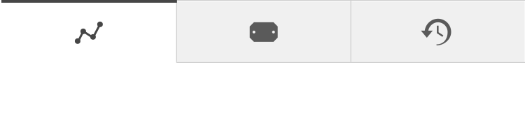
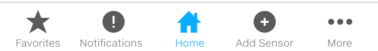

Tabs are useful for allowing users to easily switch between different views and to clearly see what the browsing choices are. They can be used as top-level navigation, or to browse categorized data sets within a panel. Care should be taken to not provide too many nested levels of tabs, or to use tabs when there are too many alternatives.
The ABB bar tabs
Primary tabs for main view and dialog content
Secondary tabs for main view and dialog content
When main content is grouped into tabs on mobile, consider using icons only, as space is restricted.
Although bottom tab bar for main navigation was originally an IOS pattern, it has recently emerged also to Android and can be used cross platform. Follow platform guidance on font/icon sizing relative to screen size, and consider whether icons + text is required.
